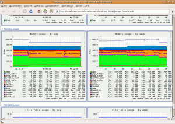

Munin
Dieser Artikel wurde für die folgenden Ubuntu-Versionen getestet:
Dieser Artikel ist größtenteils für alle Ubuntu-Versionen gültig.
Zum Verständnis dieses Artikels sind folgende Seiten hilfreich:
Munin  ist eine umfassende und sehr einfach zu bedienende Rechner-Überwachungssoftware. Verschiedene Informationen wie die Prozessorauslastung, Festplattenbelegungen oder auch Zugriffe auf Serverdienste eines oder mehrerer Rechner werden permanent gesammelt und können über eine Weboberfläche betrachtet werden.
ist eine umfassende und sehr einfach zu bedienende Rechner-Überwachungssoftware. Verschiedene Informationen wie die Prozessorauslastung, Festplattenbelegungen oder auch Zugriffe auf Serverdienste eines oder mehrerer Rechner werden permanent gesammelt und können über eine Weboberfläche betrachtet werden.
Munin selber ist als Master/Client-Anwendung aufgebaut. Der Master-Rechner kann den "Munin-Node" auf weiteren Rechnern im Netzwerk abfragen und so diese Informationen mit anzeigen. Munin eignet sich daher für die Überwachung eines einzigen Rechners wie auch für die Überwachung eines ganzen Rechnerparks. Ein Beispiel einer Munin-Installation zur Überwachung eines ganzen Rechnerfuhrparks findet man hier .
Alternativen zu Munin sind Nagios und Icinga .
Installation¶

Munin kann aus den Paketquellen installiert werden. Dazu müssen je nach Bedarf die Pakete
munin (universe, [2])
munin-node (universe)
installiert [1] werden. Je nach Einsatz sollte nur munin bzw. munin-node installiert werden. munin-node sammelt nur die Daten, die dann von munin abgerufen und über einen Webserver dargestellt werden.
Bei der Installation von munin ist zu beachten, dass ein Webserver auf dem Rechner bereits eingerichtet sein sollte, damit die Informationen auch abgerufen werden können. Ebenso muss der Cron-Daemon installiert sein, damit munin auch die Serverstatistiken erstellt (Der Master und der Client erstellen dazu in /etc/cron.d/ je einen Cron-Job). Anschließend kann man die Statistiken unter der Adresse http://<Servername oder -IP>/munin/ abrufen.
Munin steuern¶
Wie alle anderen Dienste bringt Munin Start/Stop-Skripte mit. Diese Skripte lassen sich natürlich auch zum Kontrollieren des Dienstes gebrauchen.
# Allgemein
sudo /etc/init.d/munin-node {start|stop|restart|force-reload|try-restart}
# Beispiel
sudo /etc/init.d/munin-node restart "start" - Startet den Dienst
"stop" - Stoppt den Dienst
"restart" - Startet den Dienst neu, bestehende Verbindungen auf den Server werden gekappt
"force-reload" - Lädt die Konfigurationsdateien neu und beendet laufende Verbindungen
"try-restart" - Startet den Dienst nur neu, wenn er vorher nicht beendet wurde
Mehr dazu im Wiki unter Dienste.
Konfiguration¶
Munin und Munin-Node können nun getrennt voneinander eingerichtet werden. Die Konfiguration erfolgt jeweils über eine Textdatei, die mit einem beliebigen Texteditor sowie Root-Rechten bearbeitet werden kann [4].
Munin¶
Munin ruft die Informationen der einzelnen Nodes ab und stellt die gewonnenen Informationen über einen Webserver dar. Die Konfiguration erfolgt über die Datei /etc/munin/munin.conf.
Anderes Webverzeichnis¶
Munin legt seine Daten für den Webserver in /var/www/munin/ ab. Sollte man dieses Verzeichnis nicht benutzen wollen, so kann man dies in der munin.conf ändern.
# The next three variables specifies where the location of the RRD # databases, the HTML output, and the logs, severally. They all # must be writable by the user running munin-cron. dbdir /var/lib/munin htmldir /var/www/munin logdir /var/log/munin rundir /var/run/munin
Man sollte nicht vergessen das neue Verzeichnis selber zu erstellen und munin die Rechte mittels
chown munin:munin /var/www/domain/example.org/munin
zu übergeben.
Anmerkung: in Ubuntu 10.04 wird das Datenverzeichnis per default in /var/cache/munin/www/ abgelegt. Hier reicht ein symlink in /var/www/, wenn man das Verzeichnis dort belassen und die conf nicht anpassen möchte (zumindest bei Verwendung eines alternativen www-servers wie lighttpd):
cd /var/www/ sudo ln -s /var/cache/munin/www/ munin
Dann erreicht man die Seite von munin auch wie gewohnt über: http://host.domain.xy/munin/
Hosts¶
In der Standardeinstellung wird nur der "localhost", also der eigene Rechner von munin abgefragt.
# a simple host tree
[localhost.localdomain]
address 127.0.0.1
use_node_name yesHier kann man jedoch problemlos weitere Munin-Nodes hinzufügen. Also beispielsweise einfach
[webserver.beispiel]
address 192.168.0.10
[sqlserver.beispiel]
address 192.168.0.11in die Konfigurationsdatei einfügen.
Warnungen verschicken¶
Munin kann beim Überschreiten festgelegter Werte automatisch Warnungen verschicken. So wird man als Administrator rechtzeitig gewarnt, wenn beispielsweise Plattenplatz knapp wird. Dazu muss in der munin.conf zuerst der Empfänger mittels der Zeilen
# Drop somejuser@fnord.comm and anotheruser@blibb.comm an email everytime
# something changes (OK -> WARNING, CRITICAL -> OK, etc)
contacts me
contact.me.command mail -s "Munin notification ${var:host}" user@example.com
contact.me.always_send warning criticalbestimmt werden. Die E-Mailadresse ist hier anzupassen. Voraussetzung für den Versand solcher Emails ist, dass ein MTA wie beispielsweise Postfix installiert und konfiguriert ist. Anschliessend kann man die kritischen Werte definieren, bei denen die Warnung abgeschickt werden soll. Dies geschieht bei jedem einzelnen Host in der Art
[localhost.localdomain]
address 127.0.0.1
use_node_name yes
<plugin>.<feldname>.{critical,warning} <wert>Hierbei sind für die Platzhalter zu ersetzen:
"<plugin>" - Den Namen des Plugins bekommt man am einfachsten über die Url des Graphen. Am Ende der Url findet man den Namen wie z.B. beim Plugin zur Festplattenbelegung ".../localhost.localdomain-df.html". Das "df" wäre in diesem Fall der Pluginname.
"<feldname>" - Die Feldnamen erfährt man wiederum, wenn man sich einen Graphen im Detail ansieht. Auf diesen Seiten sind am Ende die Feldnamen unter der Bezeichnung "Internal name" aufgeführt.
"{critical,warning}" - Diese beiden Optionen sind frei wählbar und bestimmen ob eine "Warnung" oder eine "Kritische" Warnmeldung verschickt wird.
"<wert>" - Dieser Wert ist frei wählbar und sollte entsprechend dem Wert gesetzt werden, ab dem die Warnung verschickt werden soll.
Letztendlich sieht dann ein Eintrag beispielsweise so aus:
[localhost.localdomain]
address 127.0.0.1
use_node_name yes
df._dev_evms_hda2.warning 70
df._dev_evms_hda2.critical 95
df._dev_mapper_hda5.warning 70
df._dev_mapper_hda5.critical 70Munin-Node¶
Der Munin-Node sammelt Daten über das System. In der Konfigurationsdatei /etc/munin/munin-node.conf des Munin-Nodes wiederum gibt es auch nicht sehr viel einzustellen. Die wichtigste Option ist sicherlich die Möglichkeit, dass der Node von einem anderen Munin-Client abgefragt wird. Die Standardeinstellung limitiert die Abfrage auf den "localhost", weitere Nodes müssen so wie beispielsweise hier
# A list of addresses that are allowed to connect. This must be a # regular expression, due to brain damage in Net::Server, which # doesn't understand CIDR-style network notation. You may repeat # the allow line as many times as you'd like allow ^127\.0\.0\.1$ allow ^192\.168\.0\.5$
hinzugefügt werden.
Weitere Plugins¶
Von Haus aus sind zahlreiche Plugins aktiviert. Im Verzeichnis /usr/share/munin/plugins findet man noch weitere Module, die man bei Bedarf hinzufügen kann. Prinzipiell geschieht dies durch das Setzen eines Links in das Verzeichnis /etc/munin/plugins/. Alle Plugins, die dort verlinkt sind, werden von Munin-Node beachtet.
Autoconf-Plugins¶
Die meisten Plugins konfigurieren sich selber. Über den Befehl [3]
./<plugin> autoconf
yes
kann man überprüfen, ob das Modul "autoconf" beherrscht, also nicht konfiguriert werden muss. Ist die Antwort "yes", so kann das Modul ohne weitere Probleme aktiviert werden. Dazu später mehr.
Wildcard-Plugins¶
Wildcard Plugins erkennt man daran, dass sie einen Unterstrich "_" am Ende des Dateinamens wie if_ oder sensors_ tragen. Diese Plugins können mehrere Geräte überwachen und benutzen die Angabe nach dem Unterstrich als Variable. Über die Option "suggest" bekommt man Informationen zu den Möglichkeiten.
# Allgemein ./<plugin>_ suggest # Beispiel ./sensors_ suggest
fan volt temp
Plugin testen¶
Bevor man ein Plugin aktiviert, sollte man es kurz testen. Dazu gibt es das Kommando munin-run. Dieses führt das Plugin aus und zeigt die Ergebnisse in einem Terminal an.
# Allgemein sudo munin-run <plugin> # Beispiel sudo munin-run df
_dev_evms_hda2.value 50 varrun_var_run.value 1 varlock_var_lock.value 1 procbususb.value 1 udev_dev.value 1 devshm_dev_shm.value 0 lrm_lib_modules_2_6_20_16_generic_volatile.value 11 _dev_mapper_hda1.value 57 _dev_mapper_hda5.value 78
So kann man frühzeitig erkennen, ob das Plugin funktioniert und ob Daten ausgegeben werden.
Plugin aktivieren¶
Wie schon gesagt müssen die Plugins aus /usr/share/munin/plugins nur in /etc/munin/plugins/ verlinkt werden um aktiviert zu werden. Dies geschieht in einem Terminal mittels des Befehls [3]
# Normales Plugin sudo ln -s /usr/share/munin/plugins/<modul> /etc/munin/plugins/ # Wildcard-Plugin sudo ln -s /usr/share/munin/plugins/<modul>_ /etc/munin/plugins/<modul>_<ausgabe>
Nachdem man ein Plugin aktiviert hat, muss man den Munin-Node neu starten, damit das Plugin auch berücksichtigt wird.
Beispiel 1: Hardwaredaten¶
Munin kann die Daten, die die Programme Lm sensors sowie hddtemp liefern, einbinden. Sind die Programme bei der Installation von Munin-Node bereits installiert, so wird dies meist erkannt und das Plugin aktiviert. Möchte man dies nachholen, so müssen die entsprechenden Programme installiert und dann die Plugins mittels
sudo ln -s /usr/share/munin/plugins/sensors_ /etc/munin/plugins/sensors_fan sudo ln -s /usr/share/munin/plugins/sensors_ /etc/munin/plugins/sensors_volt sudo ln -s /usr/share/munin/plugins/sensors_ /etc/munin/plugins/sensors_temp
aktiviert werden.
Beispiel 2: Weitere Netzwerkschnittstelle¶
In den Standardeinstellungen werden nur die Netzwerkschnittstellen "eth0" und "eth1" abgefragt. Besitzt der Rechner eine Anbindung über WLAN oder nutzt eine Einwahlleitung, so kann man diese über
# Allgemein sudo ln -s /usr/share/munin/plugins/if_ /etc/munin/plugins/if_<schnittstelle> sudo ln -s /usr/share/munin/plugins/if_err_ /etc/munin/plugins/if_err_<schnittstelle> # Beispiel sudo ln -s /usr/share/munin/plugins/if_ /etc/munin/plugins/if_ppp0 sudo ln -s /usr/share/munin/plugins/if_err_ /etc/munin/plugins/if_err_ppp0
überwachen lassen [3].
Beispiel 3: Statistiken des Apache Webservers¶
Auch verschiedene Serverdienste lassen sich abfragen. So z.B. auch der Webserver Apache. Dieser muss jedoch noch so konfiguriert werden, dass er Informationen über seinen Zustand bereitstellt. Dies geschieht in der Konfigurationsdatei /etc/apache2/mods-available/status.conf. Hier muss noch "ExtendedStatus On" eingetragen [4] werden, so dass die Konfiguration am Ende so
<IfModule mod_status.c>
#
# Allow server status reports generated by mod_status,
# with the URL of http://servername/server-status
# Uncomment and change the ".example.com" to allow
# access from other hosts.
#
ExtendedStatus On
<Location /server-status>
SetHandler server-status
Order deny,allow
Deny from all
Allow from localhost
# Eventuell notwendig: Allow from <öffentliche IP-Addresse des Servers>
</Location>
</IfModule>aussieht. Eventuell muss das status-Modul noch aktiviert werden:
sudo a2enmod status
Anschließend muss Apache neu gestartet werden. Nun kann man die Munin-Plugins für Apache aktivieren
sudo ln -s /usr/share/munin/plugins/apache_accesses /etc/munin/plugins/ sudo ln -s /usr/share/munin/plugins/apache_processes /etc/munin/plugins/ sudo ln -s /usr/share/munin/plugins/apache_volume /etc/munin/plugins/
und Munin zeigt die Zugriffszahlen des Apache Servers an.
Eventuell bleiben die Graphen für Apache aber auch leer. In diesem Fall sollte die Verfügbarkeit von LWP (Library for WWW in Perl) mittels
sudo apt-get install libwww-perl
sichergestellt werden.
 Programmübersicht
Programmübersicht- Erstellt mit Inyoka
-
 2004 – 2017 ubuntuusers.de • Einige Rechte vorbehalten
2004 – 2017 ubuntuusers.de • Einige Rechte vorbehalten
Lizenz • Kontakt • Datenschutz • Impressum • Serverstatus -
Serverhousing gespendet von